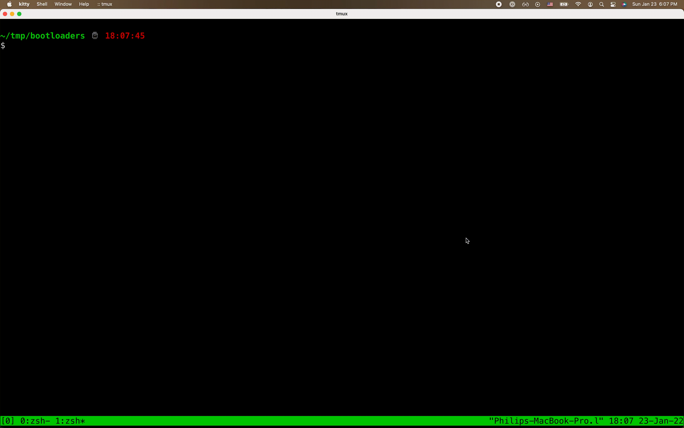
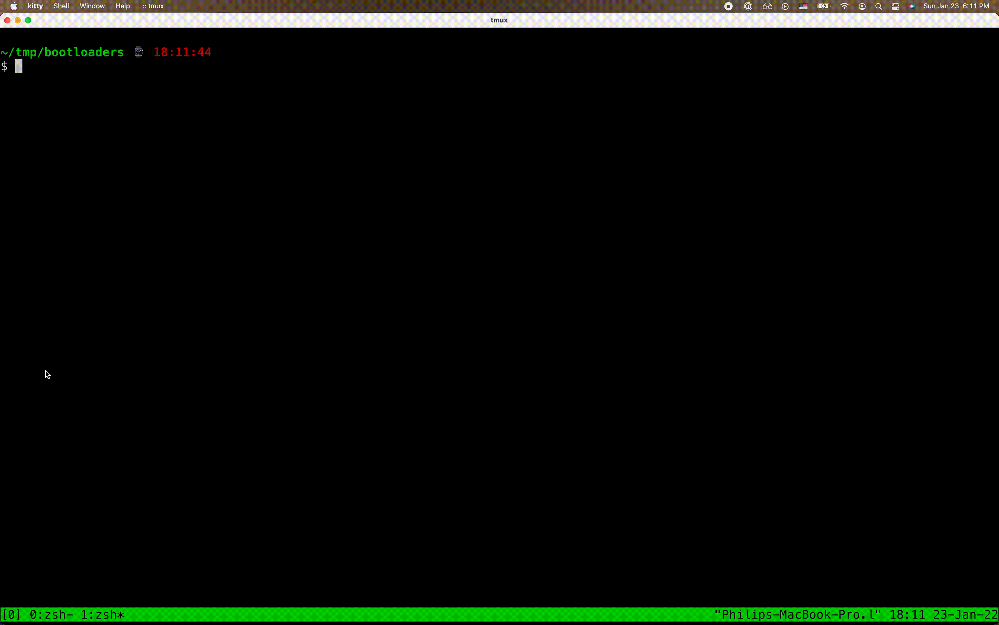
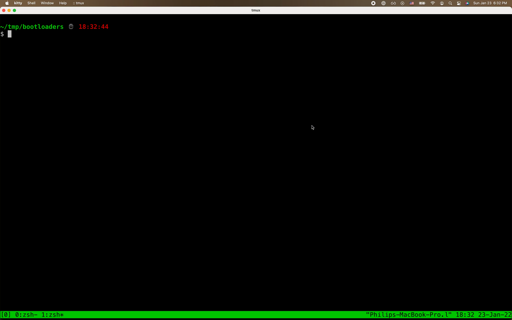

I spent a few days playing around with bootloaders for the first time. This post builds up to a text editor with a few keyboard shortcuts. I'll be giving a virtual talk based on this work at Hacker Nights on Jan 27.
There are a definitely bugs. But it's hard to find intermediate resources for bootloader programming so maybe parts of this will be useful.
If you already know the basics and the intermediates and just want a fantastic intermediate+ tutorial, maybe try this. It is very good.
The code on this post is available on Github, but it's more of a mess than my usual project.
Motivation: Snake
You remember snake bootloader in a tweet from a few years ago?
Install qemu (on macOS or Linux), nasm, and copy the snake.asm
source code to disk from that blog post.
$ cat snake.asm
[bits 16] ; Pragma, tells the assembler that we
; are in 16 bit mode (which is the state
; of x86 when booting from a floppy).
[org 0x7C00] ; Pragma, tell the assembler where the
; code will be loaded.
mov bl, 1 ; Starting direction for the worm.
push 0xa000 ; Load address of VRAM into es.
pop es
restart_game:
mov si, 320*100+160 ; worm's starting position, center of
; screen
; Set video mode. Mode 13h is VGA (1 byte per pixel with the actual
; color stored in a palette), 320x200 total size. When restarting,
; this also clears the screen.
mov ax, 0x0013
int 0x10
; Draw borders. We assume the default palette will work for us.
; We also assume that starting at the bottom and drawing 2176 pixels
; wraps around and ends up drawing the top + bottom borders.
mov di, 320*199
mov cx, 2176
rep
draw_loop:
stosb ; draw right border
stosb ; draw left border
add di, 318
jnc draw_loop ; notice the jump in the middle of the
; rep stosb instruction.
game_loop:
; We read the keyboard input from port 0x60. This also reads bytes from
; the mouse, so we need to only handle [up (0x48), left (0x4b),
; right (0x4d), down (0x50)]
in al, 0x60
cmp al, 0x48
jb kb_handle_end
cmp al, 0x50
ja kb_handle_end
; At the end bx contains offset displacement (+1, -1, +320, -320)
; based on pressed/released keypad key. I bet there are a few bytes
; to shave around here given the bounds check above.
aaa
cbw
dec ax
dec ax
jc kb_handle
sub al, 2
imul ax, ax, byte -0x50
kb_handle:
mov bx, ax
kb_handle_end:
add si, bx
; The original code used set pallete command (10h/0bh) to wait for
; the vertical retrace. Today's computers are however too fast, so
; we use int 15h 86h instead. This also shaves a few bytes.
; Note: you'll have to tweak cx+dx if you are running this on a virtual
; machine vs real hardware. Casual testing seems to show that virtual machines
; wait ~3-4x longer than physical hardware.
mov ah, 0x86
mov dh, 0xef
int 0x15
; Draw worm and check for collision with parity
; (even parity=collision).
mov ah, 0x45
xor [es:si], ah
; Go back to the main game loop.
jpo game_loop
; We hit a wall or the worm. Restart the game.
jmp restart_game
TIMES 510 - ($ - $$) db 0 ; Fill the rest of sector with 0
dw 0xaa55 ; Boot signature at the end of bootloader
Now run:
$ nasm -f bin snake.asm -o snake.bin
$ qemu-system-x86_64 -fda snake.bin

What a phenomenal hack.
I'm not going to get anywhere near that level of sophistication in this post but I think it's great motivation.
Hello world
Bootloaders are a mix of assembly programming and BIOS APIs for I/O. Since you're thinking about bootloaders you already know assembly basics. Now all you have to do is learn the APIs.
The hello world bootloader has been explained in detail (see here, here, and here) so I won't go into too much line-by-line depth.
In fact, let's just pull the code from the latter blog post.
$ cat hello.asm
bits 16 ; tell NASM this is 16 bit code
org 0x7c00 ; tell NASM to start outputting stuff at offset 0x7c00
boot:
mov si,hello ; point si register to hello label memory location
mov ah,0x0e ; 0x0e means 'Write Character in TTY mode'
.loop:
lodsb
or al,al ; is al == 0 ?
jz halt ; if (al == 0) jump to halt label
int 0x10 ; runs BIOS interrupt 0x10 - Video Services
jmp .loop
halt:
cli ; clear interrupt flag
hlt ; halt execution
hello: db "Hello world!",0
times 510 - ($-$$) db 0 ; pad remaining 510 bytes with zeroes
dw 0xaa55 ; magic bootloader magic - marks this 512 byte sector bootable!
The computer boots, prints "Hello world!" and hangs.
But aside from clerical settings (16-bit assembly, where the program
exists in memory, padding to 512 bytes) the only real bootloader-y
magic in there is int 0x10, a BIOS interrupt.
BIOS interrupts = API calls for I/O
BIOS interrupts are API calls. Just like syscalls in userland programs they have a specific register convention and number to call for the family of APIs.
When you write bootloader programs you'll spend most of your time at first trying to understand the behavior of the various BIOS APIs.
The two families we'll deal with in this post are the keyboard family (documentation here) and the display family (documentation here).
Run hello world
Anyway, back to the hello world. Assemble it with nasm and run it with qemu.
$ nasm -f bin hello.asm -o hello.bin
$ qemu-system-x86_64 -fda hello.bin

Getting the hang of it?
IO Loop
The specific function we called above to write a character to the
display is INT
10,E. The 0x10
is the argument that you call the int keyword with
(e.g. int 0x10). And the E is the specific
function within the 0x10 family. The E is
written into the AH register before
calling int. The ASCII code to be written is placed in
the AL register.
Now that output makes some sense, let's do input. In the keyboard services
documentation you may
notice that INT 16,0
provides a way to block for user input. According to that page the
ASCII character will be in AL when the interrupt returns.
Clearing the screen
You may have noticed some text gets displayed before our program runs. We can use INT 0x10,0 to clear the screen.
;; Clear screen
mov ah, 0x00
mov al, 0x03
int 0x10
All together
Since the display function reads from the same register the input function outputs to, we can just call both interrupts after each other. Wrap this in a loop and we have the world's worst editor.
$ cat ioloop.asm
bits 16
org 0x7c00
main:
;; Clear screen
mov ah, 0x00
mov al, 0x03
int 0x10
.loop:
;; Read character
mov ah, 0
int 0x16
;; Print character
mov ah, 0x0e
int 0x10
jmp .loop
times 510 - ($-$$) db 0 ; pad remaining 510 bytes with zeroes
dw 0xaa55 ; magic bootloader magic - marks this 512 byte sector bootable!
By the way, the main label here (like
the boot label above in hello.asm) is only
to help the reader. It is not something the BIOS uses.
Now that we've got the code, let's run it!
$ nasm -f bin ioloop.asm -o ioloop.bin
$ qemu-system-x86_64 -fda ioloop.bin

Digression on abstraction
There are two ways to build abstractions: assembly functions and nasm macros.
We could build a clear screen function like this:
clear_screen:
;; Clear screen
mov ah, 0x00
mov al, 0x03
int 0x10
ret
And then we can call this in the ioloop program like so:
bits 16
org 0x7c00
jmp main
clear_screen:
;; Clear screen
mov ah, 0x00
mov al, 0x03
int 0x10
ret
main:
call clear_screen
.loop:
;; Read character
mov ah, 0
int 0x16
;; Print character
mov ah, 0x0e
int 0x10
jmp .loop
times 510 - ($-$$) db 0 ; pad remaining 510 bytes with zeroes
dw 0xaa55 ; magic bootloader magic - marks this 512 byte sector bootable!
On the other hand if you do it in a macro:
bits 16
org 0x7c00
jmp main
%macro cls 0 ; Zero is the number of arguments
mov ah, 0x00
mov al, 0x03
int 0x10
%endmacro
main:
cls
.loop:
;; Read character
mov ah, 0
int 0x16
;; Print character
mov ah, 0x0e
int 0x10
jmp .loop
times 510 - ($-$$) db 0 ; pad remaining 510 bytes with zeroes
dw 0xaa55 ; magic bootloader magic - marks this 512 byte sector bootable!
And nasm macros even have a way to write macro-safe labels by
prefixing them with %% which is useful if you have
conditions or loops within a macro.
The benefit of a macro I guess is that you're not using up the stack. The benefit of a function call is that you're not duplicating code every place you use a macro. The amount of generated code eventually becomes important in bootloaders because the code must fit into 512 bytes.
I lean more toward using macros in this code.
Complex input
Reading ASCII characters is not complicated as we saw above. But what if we want to build Readline style shortcuts like ctrl-a for jumping to the start of the line?
Using INT 16,0 as we do above is fine. But rather than solely reading from the result of that function call, there is a section of memory that contains both the character pressed and control characters pressed.
Based on documentation for this memory area (found here or here), we can build a macro for reading the pressed character:
%macro mov_read_character_into 1
mov eax, [0x041a]
add eax, 0x03fe ; Offset from 0x0400 - sizeof(uint16) (since head points to next free slot, not last/current slot)
and eax, 0xFFFF
mov %1, [eax]
and %1, 0xFF
%endmacro
And another macro for reading the pressed control character (if any):
%macro mov_read_ctrl_flag_into 1
mov %1, [0x0417]
and %1, 0x04 ; Grab 3rd bit: %1 & 0b0100
%endmacro
Cursor location
Lastly we'll use some cursor APIs that allow us to handle newlines, backspace on the first column of a line, and ctrl-a (jump to beginning of line).
%macro get_position 0
mov ah, 0x03
int 0x10
%endmacro
%macro set_position 0
mov ah, 0x02
int 0x10
%endmacro
But there's something buggy about my goto_end_of_line
function. Sometimes it works and sometimes it just jumps all over the
screen in an infinite loop. Part of the problem is that the editor
memory is the video card. The cursor location is only stored there and
not in some program state like you might do in a high-level
environment/language.
goto_end_of_line:
;; Get current character
mov ah, 0x08
int 0x10
;; Iterate until the character is null
cmp al, 0
jz .done
inc dl
set_position
jmp goto_end_of_line
.done:
ret
Alright, let's put all these pieces together.
Editor with keyboard shortcuts
Start with the basics in editor.asm.
; -*- mode: nasm;-*-
bits 16
org 0x7c00
jmp main
Then add a clear screen macro.
%macro cls 0
mov ah, 0x00
mov al, 0x03
int 0x10
%endmacro
Add macros for reading and printing.
%macro read_character 0
;; Read character
mov ah, 0
int 0x16
%endmacro
%macro print_character 1
mov ax, %1
mov ah, 0x0e
int 0x10
%endmacro
Add cursor utilities.
%macro get_position 0
mov ah, 0x03
int 0x10
%endmacro
%macro set_position 0
mov ah, 0x02
int 0x10
%endmacro
goto_end_of_line:
;; Get current character
mov ah, 0x08
int 0x10
;; Iterate until the character is null
cmp al, 0
jz .done
inc dl
set_position
jmp goto_end_of_line
.done:
ret
And keyboard utilities.
%macro mov_read_ctrl_flag_into 1
mov %1, [0x0417]
and %1, 0x04 ; Grab 3rd bit: %1 & 0b0100
%endmacro
%macro mov_read_character_into 1
mov eax, [0x041a]
add eax, 0x03fe ; Offset from 0x0400 - sizeof(uint16) (since head points to next free slot, not last/current slot)
and eax, 0xFFFF
mov %1, [eax]
and %1, 0xFF
%endmacro
Now we can start the editor loop where we wait for a keypress and handle it.
editor_action:
read_character
Don't print ASCII garbage if the key pressed is an arrow key. Just do nothing. (This isn't good editor behavior in general but ours is a limited one.)
;; Ignore arrow keys
cmp ah, 0x4b ; Left
jz .done
cmp ah, 0x50 ; Down
jz .done
cmp ah, 0x4d ; Right
jz .done
cmp ah, 0x48 ; Up
jz .done
Next handle backspace.
;; Handle backspace
cmp al, 0x08
jz .is_backspace
cmp al, 0x7F ; For mac keyboards
jnz .done_backspace
.is_backspace:
get_position
If this key is pressed at the first line and the first column, do nothing.
;; Handle 0,0 coordinate (do nothing)
mov al, dh
add al, dl
jz .overwrite_character
Otherwise if backspace is pressed not at the beginning of the line, just overwrite the last character with the ASCII 0 (the code 0 not the digit 0).
cmp dl, 0
jz .backspace_at_start_of_line
dec dl ; Decrement column
set_position
jmp .overwrite_character
Otherwise you're at the beginning of the line and you need to jump to the end of the previous line.
.backspace_at_start_of_line:
dec dh ; Decrement row
set_position
call goto_end_of_line
.overwrite_character:
mov al, 0
mov ah, 0x0a
int 0x10
jmp .done
.done_backspace:
Next we handle the Enter key. This should move the cursor onto the next line and set the column back to zero.
;; Handle enter
mov_read_character_into ax
cmp al, 0x0d
jnz .done_enter
get_position
inc dh ; Increment line
mov dl, 0 ; Reset column
set_position
jmp .done
.done_enter:
Next we handle ctrl-a, jump to start of line.
;; Handle ctrl- shortcuts
;; Check ctrl key
mov_read_ctrl_flag_into ax
jz .ctrl_not_set
;; Handle ctrl-a shortcut
mov_read_character_into ax
cmp al, 1 ; For some reason with ctlr, these are offset from a-z
jnz .not_ctrl_a
;; Reset column
mov dl, 0
set_position
jmp .done
.not_ctrl_a:
For ctrl-e, jump to the end of the line.
;; Handle ctrl-e shortcut
mov_read_character_into ax
cmp al, 5
jnz .not_ctrl_e
call goto_end_of_line
jmp .done
.not_ctrl_e:
jmp .done
.ctrl_not_set:
Finally if none of these cases are met, just print the pressed character and return.
mov_read_character_into ax
print_character ax
.done:
ret
Finally, create the main function that calls this editor code in a loop.
main:
cls
.loop:
call editor_action
jmp .loop
times 510 - ($-$$) db 0 ; pad remaining 510 bytes with zeroes
dw 0xaa55 ; magic bootloader magic - marks this 512 byte sector bootable!
And we're done! Try it out:
$ nasm -f bin editor.asm -o editor.bin
$ qemu-system-x86_64 -fda editor.bin

Tedious and buggy! But I learned something, I think.
I wrote a new post on my first time exploring bootloader basics! Neat to discover the BIOS APIs and spend some time actually coding in assembly versus just generating or emulating it.https://t.co/7iP6Nib620 pic.twitter.com/xSyG1IXgEB
— Phil Eaton (@phil_eaton) January 23, 2022